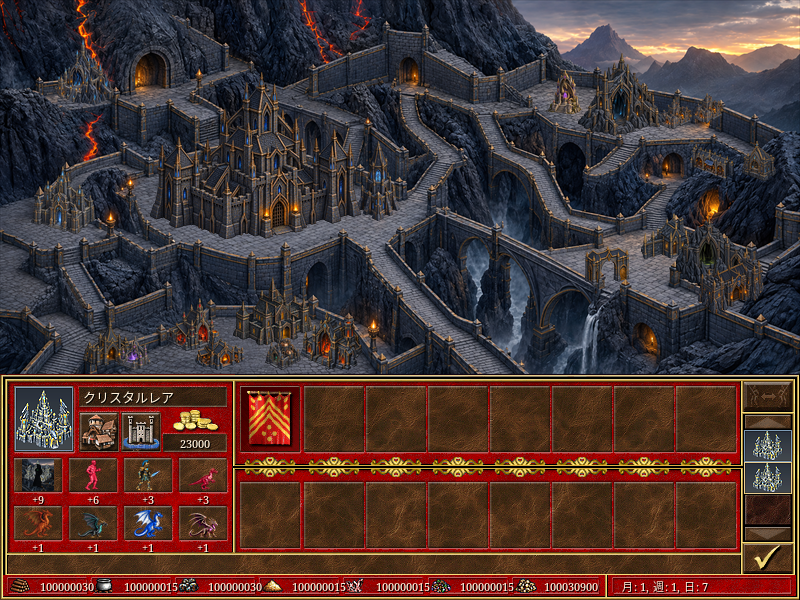

Zrzuty silnika VCMI. Kontrolowany zapis testowy, nie pełne przejście kampanii. Tłumaczenia bazowe pochodzą z katalogu VCMI; jakość wszystkich dialogów nie została oceniona przez rodzimych użytkowników języków.
